这是一套按微信公众号 SVG 白名单从第一笔编写的图文排版模板：100 个风格、20 个构图原型、930 个 SMIL 动画标签，不用 JavaScript、不用 <style>、不用 id。挑一个风格，点一下，整篇富文本就进了剪贴板，到公众号后台 Ctrl+V 即成图文。
微信公众号后台的正文编辑器会对 HTML 做清洗。公开资料普遍把 SVG 描述为被「整体放行」的命名空间，但放行是有代价的：script、style 标签被删，所有元素上的 id 属性会被移除，CSS @keyframes / animation / position 保存后失效，JS 更不可能执行。也就是说，网页里最常见的动效方案在公众号里全部不可用。
能活下来的是 SVG 自带的声明式 SMIL 动画——<animate>、<animateTransform>、<animateMotion>、<set>，配合一份约 20 项的 attributeName 白名单。这套范式最早在 2016 年由 JZCreative 团队与微信团队共同测试发布，后来被收录进《融媒体SVG交互设计技术规范》T/CASME 1609—2024。
由此推出一套很硬的写法约束：纯色几何（渐变、滤镜、clip-path、foreignObject、外链图片都不用）、内联属性（无 class 样式表）、手写多行 <text>（无自动换行）、静态自洽（动画被删掉，画面与正文仍完整可读）。本项目 100 张模板全部按这套约束生成，并由独立脚本逐张校验。
一句话区分：普通网页 SVG 追求「能画出来」，公众号 SVG 追求「被编辑器清洗之后还能画出来」。
第一版只有 3 个风格。扩到 100 个时，最初的做法是「10 个流派 × 每派 10 个参数变体」——栏数、间距、色板、字号轮换。但两名独立盲评者给出的视觉可区分度只有 2.20 ± 1.04 / 5（阈值 3.0），「本质只是换色」的假设没被拒绝。于是 v0.3.0 改成 20 个构图原型 × 5 变体，改的是信息架构与画布比例，而不是数值。
| 编号 | 构图原型 | 布局骨架 | 画布高 |
|---|---|---|---|
| 001–005 | 瑞士网格 | 2–12 栏刚性网格，超大序号 | 460 |
| 006–010 | 杂志分栏 | 非对称双栏，衬线标题 | 480 |
| 011–015 | 终端卡片 | 窗口 chrome + 命令行 + 进度条 | 500 |
| 016–020 | 工程蓝图 | 深色网格 + 尺寸标注 + 描边 | 480 |
| 021–025 | 包豪斯 | 圆 / 三角 / 硬边原色块 | 460 |
| 026–030 | 孔版叠印 | 双专色错位 + 网点 | 470 |
| 031–035 | 孟菲斯 | 波点 / 斜线 / 锯齿撞色 | 480 |
| 036–040 | 报纸铅字 | 报头 + 双细线 + 多栏 | 500 |
| 041–045 | 粗野主义 | 粗边框 + 硬阴影 | 440 |
| 046–050 | 极简笔记 | 大留白 + 1px 竖线 | 440 |
| 051–055 | 竖排卷轴 | 六条横向色带 + x 阶梯错位 | 760 |
| 056–060 | 居中诗页 | 全居中、方版圆环、大留白 | 680 |
| 061–065 | 分屏对照 | 左右反白双底，前三行 / 后三行分置 | 460 |
| 066–070 | 卡片阶梯 | 六张细边框卡片逐行错位 | 620 |
| 071–075 | 字阶 | 字号 14→34 递增 + 同步缩进 | 560 |
| 076–080 | 清单表格 | 序号列 + 每行底线 | 540 |
| 081–085 | 对角构图 | 斜切大色块，沿对角线排字 | 600 |
| 086–090 | 满幅海报 | 2/3 满幅强调色 + 反白巨字 | 700 |
| 091–095 | 便签 | 三张旋转便签 + 胶带 | 540 |
| 096–100 | 横幅飘带 | 极宽横幅，两列 × 三行 | 320 |
100 张 SVG 结构互不重复、100 套色板互不重复，画布高度横跨 320–760 共 13 种；画面上不再印「配置 / 布局 / 动画」参数说明文字——那既干扰盲评，也让所有图看起来像同一张说明卡。下面是三张真实模板（直接取自 styles/，未做任何修饰）：



Ctrl+V。主按钮通过 ClipboardItem 同时写入 text/html 与 text/plain，编辑器才会把 SVG 当图形渲染，而不是当成一段代码。若富文本路径被清洗，可改用「复制全文 HTML 源码」走 HTML 源码模式或第三方编辑器。别直接复制展示页的 HTML 源码。它含 JS、按钮、class 与交互控件，粘进公众号会被清洗成空白。页面复制的是编译后的文章内容：全部内联样式、只用 section/p/br、无 class / id / script / 外链，SVG 原样嵌入。
仓库里还有一份编译好的 wechat-article.html（412.9 KiB / 100 张 SVG / 930 个动画），无 JS，可离线打开或导入秀米、135 等第三方编辑器。它与页面上的「一键复制全文」由同一套纯函数导出，逐字节同源。
下表是 2021 版公开清单的整理（约 20 个可用属性），也是本项目 930 个动画标签的准绳。需要注意：这些资料没有一份是微信官方文档，最近一次公开清单距今已有数年，2026 年的实际行为请以真机预览为准。
| 元素 | 可用 attributeName | 典型用途 |
|---|---|---|
animate | x y width height r | 生长、位移、展开式图文、进度条 |
animate | opacity fill | 淡入、颜色过渡 |
animate | d points | 贝塞尔 / 多边形补间（表现具随机性） |
animate | stroke stroke-width stroke-linecap stroke-dashoffset | 描边动画、进度线 |
set | visibility | 防误触的显隐切换 |
animateTransform | translate scale rotate skewX skewY | 位移、翻转、台历翻阅 |
animateMotion | path | 轨迹动画 |
本项目的实际用量（脚本统计）：opacity 495、transform 252、width 92、x 54、height 22、stroke-dashoffset 15，合计 930 个标签；fill="freeze" 930 处，begin="click" 与 restart 均为 0。
受限元素：use mpath by clipPath filter；白名单文档还明确注明不应含剪切路径、滤镜、渐变、网格等矢量特征。